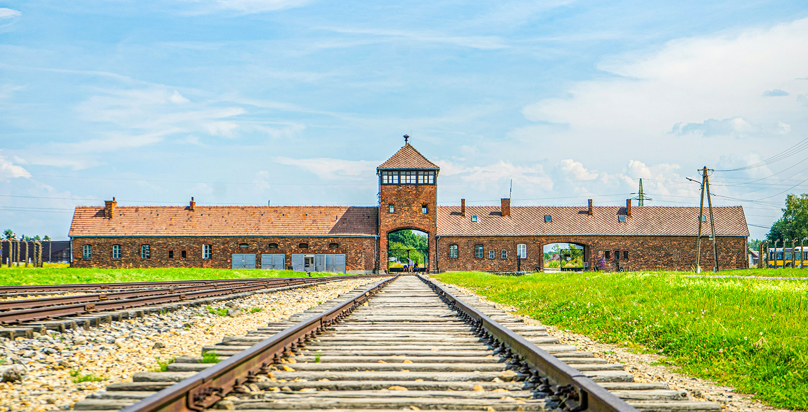

The nazi concentration camps were detention centers established from 1933 to 1945, which were initially designed to incarcerate political prisoners and communists. They expanded to hold not only Jewish people but also Jehovah's Witnesses, homosexuals, and prisoners of war. While many began as labor camps, the system evolved to become industrial-scale extermination camps designed for killing millions in gas chambers. There are a few of these camps still up for people to visit throughout Europe.
The question I want to tackle here is: Is it beneficial to keep up landmarks for such a horrible tragedy? Would it be better to get rid of these horrifying landmarks or to keep them up for the sake of memory?
The debate over whether to preserve concentration camps as landmarks shows the tension between the necessity of historical truth and the difficulty of maintaining human dignity. While the risks of dark tourism, ranging from inappropriate behavior to the psychological toll on visitors, are significant, they are outweighed by the physical site's role as an irrefutable witness to history.
Ultimately, we believe that the preservation of these sites should not be seen as an attempt to fixate on the tragedies of the past, but as a commitment to the future to never let something like this happen again.